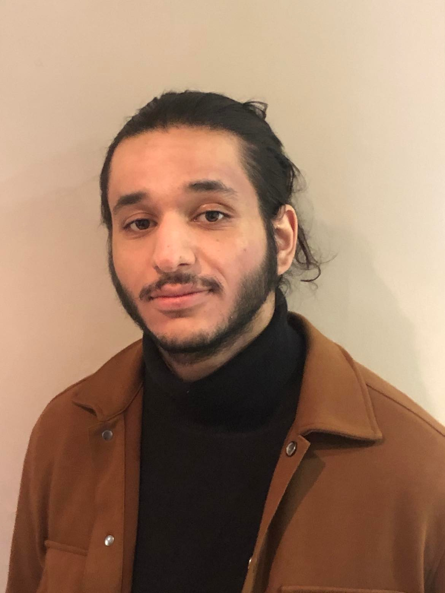

Rémi Kalboussi

Qui suis-je :
Jeune étudiant de 25 ans, Dynamique et Motivé, Actuellement en Bachelor Développeur JAVA
Education
- 2023 : BACHELOR DEVELOPPEUR JAVA
- Ecole en cours : STUDI / HETIC distanciel
- 2022: PROGRAMME GRANDE ECOLE
- Grade de Master : International Business Development / IDRAC Business School Lyon avec Choix Matière : Introduction au Codage
- 2020 : Semestre en République Tchèque en 3ème année d'Ecole de Commerce
- 2019 : BTS MUC
- Management des Unités Commerciales à l'Institut Carrel Lyon
Mes Experiences
- BUSINESS MANAGER
- ERP 2022 : Stage de fin d'études de 6 mois à CUBE 43 LYON / Créateurs d'applications et modules
- Chargé de rendez-vous clients
Community Management sur Linkedin et articles de blog
- Analyse terrain et réalisations d'études de marché sur le secteur ERP
- MANAGER ET CHEF DE PROJET
- 2021 : Stage de 6 mois en 1er année de Master à USR Ambulances à Lausanne en Suisse
- Responsable Communication interne / externe
- Responsable des achats : produits digitaux
- Prospection clients et négociation avec les prestataires
- Responsable du lancement de nouveaux modèles d'ambulances privées
- ASSISTANT MANAGER
- 2019 : 1er Stage de 6 mois à ARMAND THIERY à Anthy sur Léman
- Assistant manager sur le merchandising
- Ouverture et fermeture du magasin
- Prise en charge et gestion des clients
Skills
- Relation Client
- Cross Cultural Management
- Communication Interne / Externe
- Maitrise pack office et environnement MAC
- Code : HTML CSS JavaScript
Certifications / Prix
- Diplôme : Grade de Master, International Business Management / Gestion et Marketing Commercial
- Brevet de Technicien : Management des Unités Commerciales
- Finaliste du concours d'éloquence en Ecole de Commerce
Autres